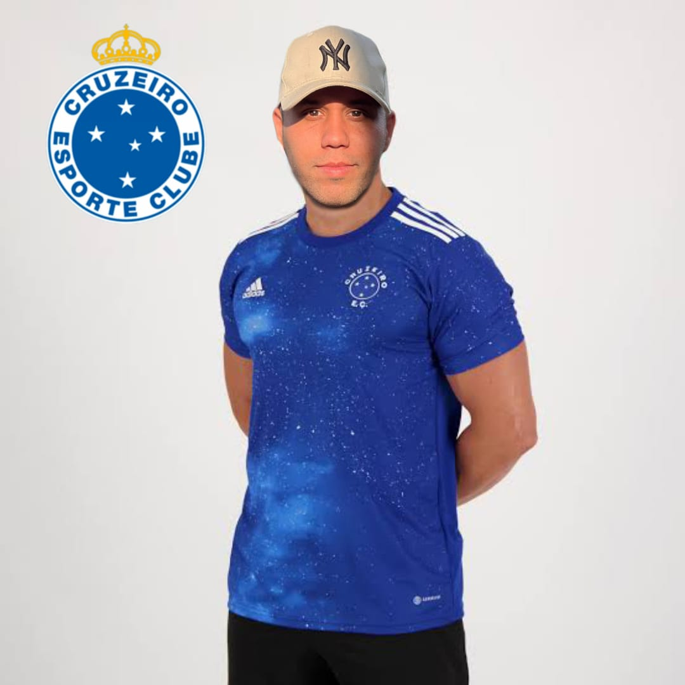

TORCEDOR FANÁTICO É ESCOLHIDO PARA
SER MODELO DO CRUZEIRO

Cruzeirense fanático é eleito modelo para a nova camisa do time.
Belo Horizonte - O torcedor Raphael, conhecido por sua paixão incondicional pelo Cruzeiro, foi escolhido para ser o modelo que irá exibir a nova camiseta do time. A notícia foi
anunciada nesta quinta-feira (15) em uma coletiva de imprensa realizada pelo clube. Segundo a diretoria, a escolha do Raphael como modelo da nova camisa foi unânime entre os
torcedores, que o consideram o exemplo perfeito de amor à camisa celeste. "O Raphael é um torcedor de verdade, desses que estão sempre presente no estádio, que choram junto
com o time e vibram com cada gol marcado. Ele é a representação do que é ser Cruzeirense", afirmou o presidente do clube. Raphael, que estava presente na coletiva de imprensa,
não escondeu a emoção ao receber a notícia: "É uma honra enorme poder representar meu time do coração e mostrar para todo mundo como é linda a nova camisa. Estou muito
emocionado!". Questionado sobre como iria se preparar para ser o modelo da nova camisa, Raphael não hesitou: "Vou trein muito para ficar em forma e exibir com orgulho a camisa
do Cruzeiro. Até lá, vou rezar para que a camisa não seja tão justa, senão eu vou ter que treinar ainda mais!". A escolha do Raphael como modelo da nova camisa do Cruzeiro certamente
foi uma escolha acertada. Seu amor pelo time é contagiante e certamente irá inspirar ainda mais os torcedores a vestirem a camisa celeste com orgulho. Agora, é esperar para ver como
ele irá se sair no desfile de moda do time.
CANCELADO O PROJETO FINAL DA TURMA DE SALESFORCE!
SoulCode cancela projeto final de formação em Desenvolvedor Salesforce e alunos comemoram!
São Paulo - Os alunos da escola detecnologia SoulCode receberam uma notícia surpreendente nesta semana: o projeto final de formação em Desenvolvedor Salesforce foi
cancelado A notícia, que poderia ter sido recebida com frustração, foi na verdade motivo de imensa felicidade para os estudantes. O projeto final de formação, que consistia
em desenvolver uma aplicação para a plataforma Salesforce, era considerado um dos momentos mais desafiadores e estressantes do curso. Muitos alunos se sentiam
sobrecarregados com a quantidade de trabalho e pressão envolvidos. Mas com o cancelamento do projeto, os alunos se sentiram aliviados e felizes. "Eu estava preocupado
com o projeto final desde o começo do curso. Saber que ele foi cancelado é um peso enorme que saiu das minhas costas", afirmou um dos alunos. A decisão de cancelar o
projeto final foi tomada pela diretoria da escola, que reconheceu que a carga de trabalho estava afetando negativamente o bem-estar dos alunos. "Nós queremos que nossos
alunos aprendam e se desenvolvam, mas não queremos que isso seja feito às custas de sua saúde mental e emocional", afirmou a diretora da SoulCode. A notícia do cancelamento
do projeto final foi recebida com alívio e comemoração pelos alunos. Muitos deles afirmaram que agora se sentem mais animados e motivados para continuar o curso.
"Eu estava quase desistindo do curso por causa do projeto final. Agora, com essa notícia, me sinto mais motivado do que nunca para continuar aprendendo", afirmou outro
aluno. Embora alguns possam argumentar que o cancelamento do projeto final é uma perda para os alunos, a decisão da SoulCode mostra que a escola está comprometida com
a saúde e o bem-estar de seus estudantes. O importante é que os alunos continuem aprendendo e se desenvolvendo, sem se sentir sobrecarregados e estressados. E com o
cancelamento do projeto final, eles poderão fazer exatamente isso.
GATO MOTOKA CONQUISTA CORAÇÕES DE DESENVOLVEDORES
O vídeo do GATO MOTOKA conquistou os desenvolvedores da SoulCode
Durante uma apresentação na aula da escola de tecnologia SoulCode, os desenvolvedores foram surpreendidos por um vídeo que se tornou o grande destaque do dia.
Tratava-se do vídeo do GATO MOTOKA, que arrancou risadas e aplausos de todos os presentes. No vídeo, o gato aparece sentado em uma moto, vestindo um capacete
e óculos escuros. Ele balança a cabeça ao som de uma música eletrônica, como se estivesse curtindo um passeio de moto. O vídeo é curto, mas fez sucesso instantâneo
entre os desenvolvedores. "Eu nunca vi nada igual", afirmou um dos alunos. "O GATO MOTOKA é simplesmentehilário! Foi um momento de descontração em um dia de
muito trabalho e aprendizado". O vídeo se tornou rapidamente um viral entre os alunos da SoulCode. Muitos compartilharam em suas redes sociais e enviaram para amigos
e familiares. Até mesmo os professores e funcionários da escola foram contagiados pelo sucesso do vídeo.Para os desenvolvedores, o vídeo do GATO MOTOKA é um exemplo
de como pequenos momentos de descontração podem ser importantes em um ambiente de aprendizado. "Nós trabalhamos duro todos os dias, e um pouco de humor e
diversão podem ajudar a manter o ânimo e a motivação lá em cima", afirmou um dos alunos. A SoulCode é uma escola de tecnologia comprometida em formar profissionais
qualificados e preparados para o mercado de trabalho. E o vídeo do GATO MOTOKA mostrou que, além de ensinar programação e tecnologia, a escola também valoriza momentos
de descontração e diversão.